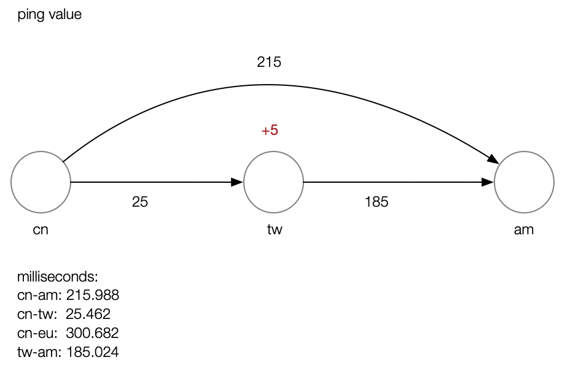

ping test

traceroute test
cn-am:
1 * * *
2 11.212.252.65 6.671 ms 11.212.253.65 5.947 ms 11.212.253.69 5.618 ms
3 11.218.131.173 4.181 ms 11.218.131.97 4.052 ms 11.218.131.125 6.259 ms
4 11.218.131.250 1.149 ms 1.312 ms 11.218.131.242 1.181 ms
5 119.38.212.114 1.014 ms 119.38.212.102 0.578 ms 116.251.107.177 0.868 ms
6 116.251.113.153 1.475 ms 116.251.113.149 1.872 ms 116.251.113.137 1.470 ms
7 183.2.180.253 1.638 ms 183.2.180.57 1.958 ms 183.2.180.197 1.617 ms
8 183.2.182.113 2.716 ms 183.2.182.125 2.551 ms 183.2.182.117 2.726 ms
9 119.147.222.5 8.206 ms 119.147.222.33 6.288 ms 119.147.223.109 7.860 ms
10 202.97.91.6 56.998 ms 202.97.94.150 6.860 ms 202.97.94.138 6.735 ms
11 202.97.94.69 52.755 ms 202.97.94.98 62.030 ms 202.97.94.94 56.416 ms
12 202.97.61.114 71.490 ms 71.172 ms 70.825 ms
13 202.97.62.214 11.949 ms 12.428 ms 12.194 ms
14 108.170.241.80 10.990 ms 108.170.241.16 13.125 ms 108.170.241.15 94.473 ms
15 108.170.229.13 11.187 ms 216.239.63.231 11.124 ms 108.170.229.13 10.697 ms
16 209.85.247.124 24.633 ms 26.688 ms 216.239.46.119 109.311 ms
17 209.85.249.74 168.214 ms 209.85.249.62 178.721 ms 209.85.249.74 167.455 ms
18 108.170.235.196 208.177 ms 74.125.37.82 214.269 ms 108.170.228.146 202.160 ms
19 72.14.233.82 188.731 ms 72.14.237.134 180.058 ms 72.14.233.82 187.360 ms
20 209.85.249.44 202.217 ms 209.85.240.17 201.404 ms 209.85.249.50 218.371 ms
21 216.239.56.82 213.774 ms 72.14.233.113 218.121 ms 217.428 ms
22 216.239.50.204 215.543 ms 72.14.238.187 224.458 ms 66.249.94.89 208.588 ms
23 * * *
24 * * *
25 * * *
26 * * *
27 * * *
28 * * *
29 * * *
30 * * *
cn-tw
1 * * *
2 11.212.252.65 5.627 ms 11.212.253.69 6.687 ms 11.212.253.65 5.053 ms
3 11.218.131.97 4.834 ms 11.218.131.169 3.709 ms 11.218.131.97 4.817 ms
4 11.218.131.242 1.056 ms 11.218.131.230 1.044 ms 11.218.131.246 1.065 ms
5 116.251.107.177 1.739 ms 119.38.212.102 0.566 ms 0.534 ms
6 42.120.242.213 1.654 ms 42.120.242.217 2.295 ms 42.120.242.213 1.760 ms
7 183.2.180.57 1.327 ms 183.2.180.197 2.406 ms 183.2.180.13 1.596 ms
8 183.2.182.125 10.180 ms 183.2.182.117 3.478 ms 183.2.182.129 2.079 ms
9 119.147.222.33 9.492 ms 119.147.220.37 10.072 ms 119.147.219.245 7.555 ms
10 202.97.94.146 6.312 ms 202.97.94.122 6.224 ms 202.97.94.142 6.204 ms
11 202.97.94.102 74.457 ms 202.97.94.90 87.047 ms 86.884 ms
12 202.97.61.114 86.087 ms 85.799 ms 92.376 ms
13 202.97.62.214 12.983 ms 12.130 ms 12.979 ms
14 108.170.241.15 71.755 ms 71.459 ms 108.170.241.80 11.611 ms
15 108.170.232.210 75.214 ms 209.85.249.156 82.241 ms 209.85.250.119 13.800 ms
16 209.85.247.124 29.962 ms 216.239.41.7 22.102 ms 172.253.50.217 24.959 ms
17 72.14.233.210 23.074 ms 216.239.51.215 86.876 ms 72.14.233.79 23.212 ms
18 216.239.54.95 25.799 ms * 209.85.247.197 26.563 ms
19 * * *
20 * * *
21 * * *
22 * * *
23 * * *
24 * * *
25 * 35.201.231.236 27.283 ms *
The time of the first 13 hops are almost the same.
tw-am
1 74.125.37.82 143.556 ms 209.85.242.80 143.425 ms 216.239.49.134 143.904 ms
2 72.14.237.134 157.309 ms 72.14.233.82 156.864 ms 209.85.143.135 157.851 ms
3 * 209.85.240.17 174.408 ms 209.85.249.44 174.313 ms
4 72.14.233.113 185.404 ms * 185.537 ms
5 72.14.237.151 185.323 ms 72.14.232.89 185.297 ms 216.239.50.204 185.251 ms
6 * * *
7 * * *
8 * * *
9 * * *
10 * * *
11 * * *
12 * * *
13 * * *
14 * * *
curl test
curl -s -o /dev/null -w "%{time_namelookup} %{time_connect} %{time_appconnect} %{time_pretransfer} %{time_redirect} %{time_starttransfer} %{time_total}\n" https://www.nyannko.tk/
The result of curl HTTP will be redirected to HTTPS if flag -L is added. In these cases -L is not added in order to compare the latency differences between HTTP and HTTPS.
HTTP
from cn: 0.5~0.9s
0.029 0.269 0.000 0.269 0.000 0.503 0.503
0.509 0.722 0.000 0.722 0.000 0.934 0.935
0.509 0.722 0.000 0.722 0.000 0.936 0.936
0.028 0.242 0.000 0.243 0.000 0.457 0.457
0.028 0.244 0.000 0.244 0.000 0.461 0.461
from tw: (1.8s; 0.4s)
1.510 1.697 0.000 1.697 0.000 1.882 1.882
0.004 0.189 0.000 0.189 0.000 0.374 0.374
...
HTTPS
from cn: (2.5s; 1.5~2.1s)
1.510 1.726 2.305 2.306 0.000 2.535 2.535
0.509 0.725 1.306 1.306 0.000 1.523 1.523
0.125 0.405 1.120 1.120 0.000 1.406 1.406
0.125 0.463 1.285 1.285 0.000 1.637 1.637
0.509 0.886 1.754 1.754 0.000 2.123 2.123
HTTPS from tw: (2.4s; 0.8s)
1.510 1.698 2.224 2.224 0.000 2.409 2.409
0.004 0.189 0.696 0.696 0.000 0.882 0.882
0.004 0.190 0.684 0.684 0.000 0.869 0.869
0.004 0.189 0.675 0.675 0.000 0.860 0.860
0.004 0.189 0.671 0.671 0.000 0.857 0.857
Intuition
Stable factors:
DNS lookup time is always much higher in the first time than the subsequent results, since the latter use result which stores in DNS server cache.
server processing time = time_starttransfer - time_pretransfer. In this case, server's processing time is about 0.2s.redirect time is always 0.
Determinants:
The determinant for HTTP is the TCP connection time, namely
time_connectin the second column. Because of the TCP three-way handshake,time_connectis usually greater thanRTT + (RTT/2)which is measured in the ping test.The determinants for HTTPs is SSL connection time, namely
time_appconnectin the third column. This value consists of the TCP 3way handshake time(time_connect) and the time for subsequent server certificates transmission, key exchange, etc. This time maybe greater than 5*RTT, or maybe wrong.
comparison
ss:
$ curl --proxy socks5h://127.0.0.1:7000 -s -o /dev/null -w "%{time_namelookup} %{time_connect} %{time_appconnect} %{time_pretransfer} %{time_redirect} %{time_starttransfer} %{time_total}\n" https://www.google.com
0.000 0.001 0.649 0.649 0.000 0.891 0.891
mp:
$ curl --proxy socks5h://127.0.0.1:40000 -s -o /dev/null -w "%{time_namelookup} %{time_connect} %{time_appconnect} %{time_pretransfer} %{time_redirect} %{time_starttransfer} %{time_total}\n" https://www.google.com
0.000 0.001 0.866 0.866 0.000 1.113 1.113
$ curl --proxy socks5h://127.0.0.1:7000 -s -o /dev/null -w "%{time_namelookup} %{time_connect} %{time_appconnect} %{time_pretransfer} %{time_redirect} %{time_starttransfer} %{time_total}\n" https://www.youtube.com
0.000 0.001 0.664 0.664 0.000 0.988 2.655
$ curl --proxy socks5h://127.0.0.1:40000 -s -o /dev/null -w "%{time_namelookup} %{time_connect} %{time_appconnect} %{time_pretransfer} %{time_redirect} %{time_starttransfer} %{time_total}\n" https://www.youtube.com
0.000 0.001 0.866 0.866 0.000 1.337 3.144
tor的一个时间分布: 建立tcp连接用了2.65s，(和第一个点)建立ssl连接用了9.528s，第一个点回传消息用了10.611s,但是总时间却有21s,这中间的10秒是第一个节点到网站再到client所用的时间。
curl -s -o /dev/null --proxy socks5h://127.0.0.1:9050 -w "%{time_namelookup} %{time_connect} %{time_appconnect} %{time_pretransfer} %{time_redirect} %{time_starttransfer} %{time_total}\n" https://www.youtube.com
0.000 2.652 9.528 9.528 0.000 10.611 21.070